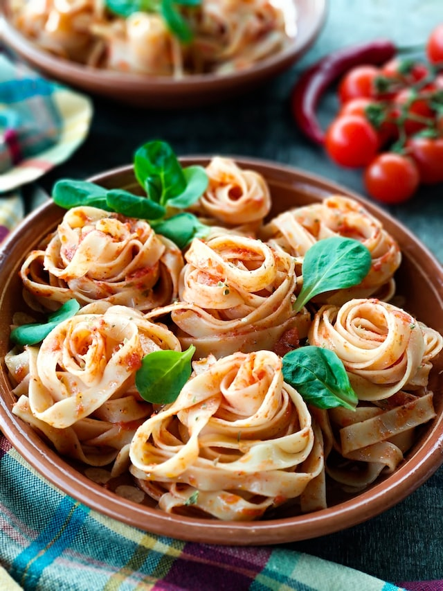

Creamy tomato & sausage pasta
How to make creamy tomato and sausage pasta

Ingredients
- 1/2 tbsp Olive oil
- Sliced sausages
- 1/2 an Onion, chopped
- 3 cloves of Garlic
- 1 tbsp Dried herbs
- 400 g tomato passata
- 1 tbsp tomato puree
- 50 ml cream
- 60 g Parmesan cheese
- Bacon rashes
Recipe:
- Cook the sausage in a frying pan with the olive oil on medium-high heat for 5 minutes, or until the sausages have browned
- Remove the sausage from the pan and reduce the heat to medium-low
- Add the bacon rashes and onions to the frying pan and cook until the rashes are crisp and the onions are soft
- Mix in the garlic and herbs until the you can smell the rich fragrance (about 1 minute)
- Add the sausage back to the frying pan and stir in the tomato passata and puree
- Increase the heat and bring the sauce to a simmer. Allow to cook for about 10 minutes, or until thickened
- Add the Parmesan cheese and cream to the sauce
- Make the pasta
- Combine and enjoy!